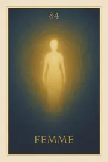

Archétypes – Union et Humanité incarnée
Les 4 archétypes de l’oracle Sia – Noun, l’Homme, la Femme et l’Enfant – incarnent des forces originelles, des présences intérieures universelles. Chacun porte un rôle essentiel dans l’évolution de l’âme : Noun, l’Océan primordial d’où tout émerge ; l’Homme, la volonté de se tenir debout dans le monde ; la Femme, la mémoire d’amour et de transmission ; l’Enfant, la vérité innocente et absolue. Ces cartes ne sont pas des rôles sociaux : elles sont des matrices symboliques traversées à chaque cycle.
Carte 82 – Noun
Mots-clés :
Numérologie :
Planète principale : Aucune (Symbole divin ancien)
Divinité principale : Aucune
Planète secondaire : Aucune
Divinité secondaire : Aucune
Interprétation de la carte 82 : Noun (droite)
Lecture intuitive rapide
Avant toute chose, il y a Noun. Pas une origine, pas un commencement, mais un océan sans limite. L’âme n’est ni séparée, ni exposée, car tout est contenu dans Noun. Tout est autorisé, tout est accueilli. Quand l’âme s’abandonne à cela, elle se sent entourée sans être enfermée, protégée sans restriction, incluse sans devoir se justifier. Noun ne juge pas. Noun ne répond pas. Noun est là, et c’est tout. Mais quand l’âme doute, quand elle croit devoir se défendre seule, ou qu’elle rejette ce qui la dépasse, elle s’isole de cette matrice invisible, et se croit exposée à tout.
1. Caractère de la personne
L’âme se sent entourée. Elle n’a pas besoin de défense : tout est contenu.
2. Plan affectif
L’âme ne cherche pas à retenir ou contrôler. L’amour circule dans un espace infini.
5. Plan spirituel
L’âme reconnaît qu’elle baigne dans une conscience plus vaste qu’elle. Elle s’abandonne à ce qui la dépasse.
Carte 82 : Noun (inversée)
1. Caractère de la personne
L’âme se croit seule, exposée. Elle a rompu son lien avec le Tout invisible.
2. Plan affectif
L’âme s’accroche, se protège, ou rejette. Elle ne sent plus le filet invisible qui la relie à tout.
5. Plan spirituel
L’âme doute du soutien cosmique. Elle croit qu’elle doit tout porter seule.
Résumé de la carte 82 : Noun
NOUN est la présence cosmique primordiale.
À l’endroit, l’âme s’y sent portée.
À l’envers, elle s’en croit coupée.
Carte 83 – L'homme
Mots-clés : :
Numérologie :
Planète principale : Aucune
Divinité principale : Aucune
Planète secondaire : Aucune
Divinité secondaire : Aucune
Interprétation de la carte 83 : L'homme (droite)
Lecture intuitive rapide
L’âme regarde la fréquence masculine qu’elle a incarnée, dans une ou plusieurs vies. Pas l’identité biologique, mais l’énergie qui agit, oriente, structure, protège, ou qui, parfois, a écrasé, dominé, blessé, ou fui. À l’endroit, l’âme reconnaît cette vibration comme un axe vivant, un pilier silencieux, une présence ferme et juste. Elle n’a plus besoin de se prouver. Elle est là, stable, claire. À l’envers, elle voit ce qu’elle a porté ou subi : la dureté, la violence, le besoin de maîtriser, ou le rejet total du masculin — en elle ou chez l’autre. Ce regard ne juge pas. Il révèle le rapport profond de l’âme à cette énergie, et comment celle-ci a influencé toutes ses incarnations.
1. Caractère de la personne
L’âme est droite, stable, posée. La force intérieure n’est plus une réaction, mais une présence.
2. Plan affectif
L’âme aime sans s’effacer ni dominer. Elle est claire, fiable, respectueuse dans ses liens.
5. Plan spirituel
L’âme a intégré la vibration masculine sacrée. Elle agit sans imposer, et se retire sans fuir.
Carte 83 : L'homme (inversée)
1. Caractère de la personne
L’âme s’est construite dans la dureté. Elle n’a pas encore pacifié sa force.
2. Plan affectif
L’âme a blessé ou a fui par peur d’être vulnérable. La distance est encore une protection.
5. Plan spirituel
L’âme rejette ou déforme l’énergie masculine. Elle confond puissance et domination, direction et rigidité.
Résumé de la carte 83 : L'homme
L’HOMME est le miroir de la vibration masculine incarnée par l’âme. À l’endroit, elle est claire, alignée, protectrice. À l’envers, elle porte encore les marques de la dureté ou du rejet.
Carte 84 – La femme
Mots-clés : :
Numérologie :
Planète principale : Aucune
Divinité principale : Aucune
Planète secondaire : Aucune
Divinité secondaire : Aucune
Interprétation de la carte 84 : La femme (droite)
Lecture intuitive rapide
L’âme regarde la vibration féminine qu’elle a portée, dans une ou plusieurs vies. Ce n’est pas un corps, un rôle ou une image, c’est une fréquence subtile : celle de la réceptivité vivante, de la présence sensible, de l’amour libre, ou, parfois, du masque affectif, du mensonge doux, de la séduction confuse. À l’endroit, l’âme ne cherche plus à plaire. Elle irradie sans manipuler, aime sans posséder, ressent sans se perdre. Elle est pleine, ouverte, sans besoin d’être vue ou confirmée. À l’envers, l’âme a utilisé cette vibration pour attirer et retenir, ou pour masquer ses blessures. Elle a menti pour ne pas être quittée, aimé pour être rassurée, donné pour recevoir, ou rejeté sa sensibilité par peur d’être trahie.
1. Caractère de la personne
L’âme est sensible, rayonnante, présente sans besoin. Elle n’attire plus. Elle est.
2. Plan affectif
L’âme aime sans posséder. Elle ne ment pas pour garder l’autre près d’elle.
5. Plan spirituel
L’âme a intégré la vibration féminine pure. Elle ressent et reçoit sans se dissoudre.
Carte 84 : La femme (inversée)
1. Caractère de la personne
L’âme a porté le masque de la douceur pour contrôler. Elle a confondu séduction et vérité.
2. Plan affectif
L’âme a aimé pour retenir, donné pour ne pas être abandonnée. La dépendance reste active.
5. Plan spirituel
L’âme a rejeté sa sensibilité ou l’a dévoyée. Elle n’a pas encore guéri le féminin blessé en elle.
Résumé de la carte 84 : La femme
LA FEMME reflète la vibration féminine portée ou rejetée par l’âme. À l’endroit, l’amour est libre. À l’envers, la blessure manipule encore les liens.
Carte 85 – L'enfant
Mots-clés : :
Numérologie :
Planète principale : Aucune
Divinité principale : Aucune
Planète secondaire : Aucune
Divinité secondaire : Aucune
Interprétation de la carte 85 : L'enfant (droite)
Lecture intuitive rapide
L’âme regarde l’enfant qu’elle a été, non pas dans un corps, mais dans sa forme première, sa vibration d’origine. C’est ce qui en elle fut pur, spontané, confiant, curieux. Ce n’est pas une innocence naïve, mais une présence claire, ouverte au vivant, sans stratégie, sans protection. À l’endroit, cette vibration est retrouvée. L’âme est en paix avec ses débuts, elle n’a plus honte de sa fragilité passée. Elle rayonne une simplicité sacrée. À l’envers, l’âme porte encore la mémoire d’une blessure ancienne, ou reste figée dans une dépendance subtile. Elle veut être reconnue, vue, protégée. Elle n’a pas encore offert à cet enfant intérieur le regard qu’il attend.
1. Caractère de la personne
L’âme est simple, claire, ouverte. Elle n’a rien à prouver ni à cacher.
2. Plan affectif
L’âme aime sans attente. La confiance est revenue, stable.
5. Plan spirituel
L’âme retrouve sa vibration d’origine. L’enfant intérieur est reconnu et apaisé.
Carte 85 : L'enfant (inversée)
1. Caractère de la personne
L’âme reste influencée par une blessure ancienne. Elle attend encore d’être rassurée.
2. Plan affectif
L’âme aime pour être protégée. L’innocence est utilisée pour retenir.
5. Plan spirituel
L’âme n’a pas encore rencontré son enfant intérieur. Elle projette encore son besoin d’amour.
Résumé de la carte 85 : Heka
L’ENFANT est la vibration d’origine de l’âme. À l’endroit, elle retrouve sa simplicité sacrée. À l’envers, elle reste figée dans une blessure ou un besoin de protection.